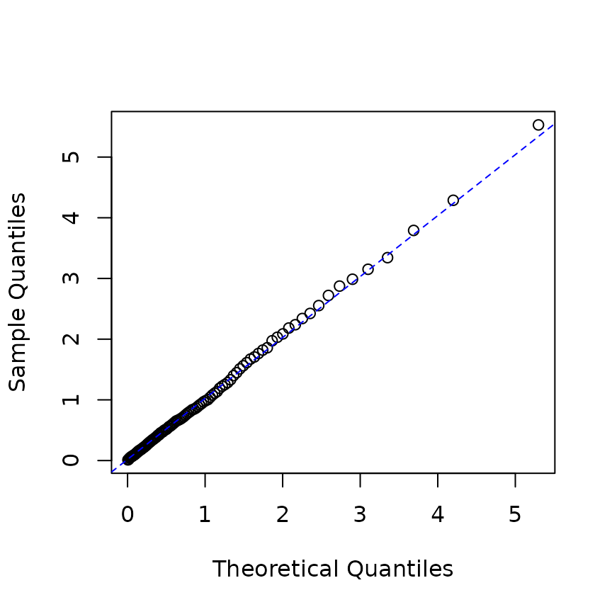
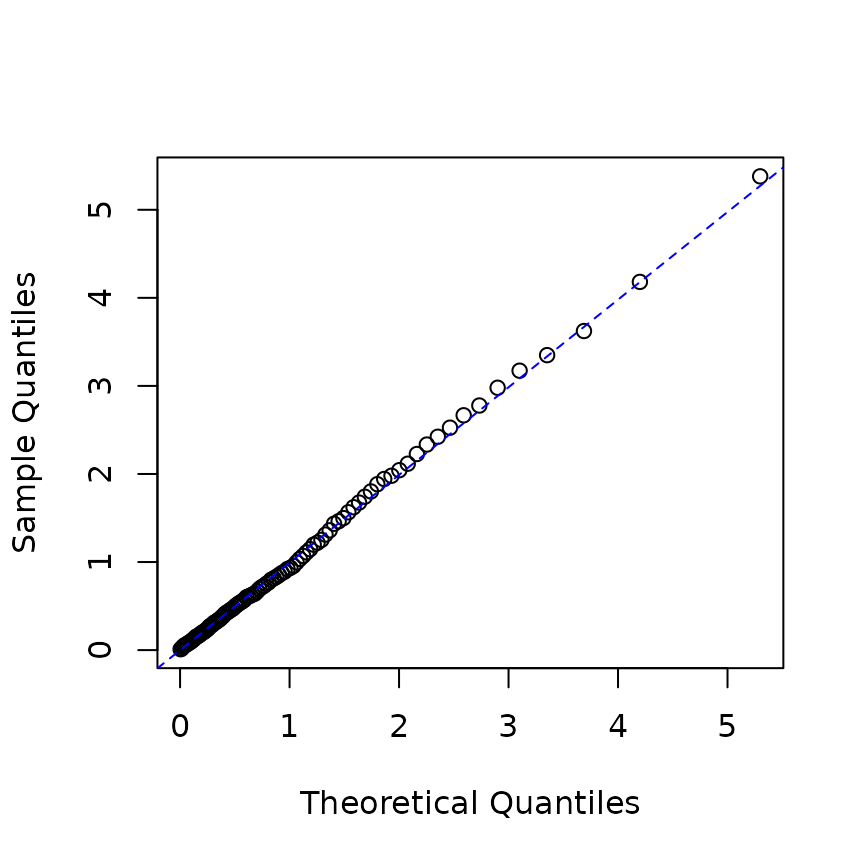
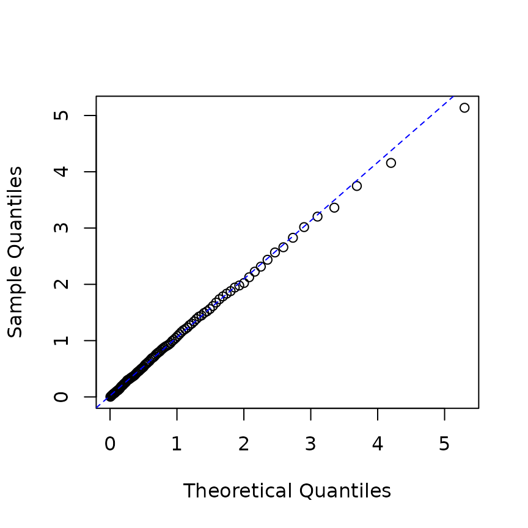
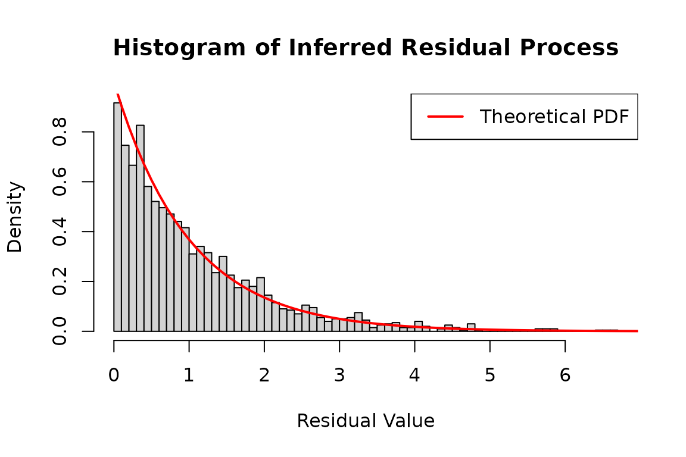
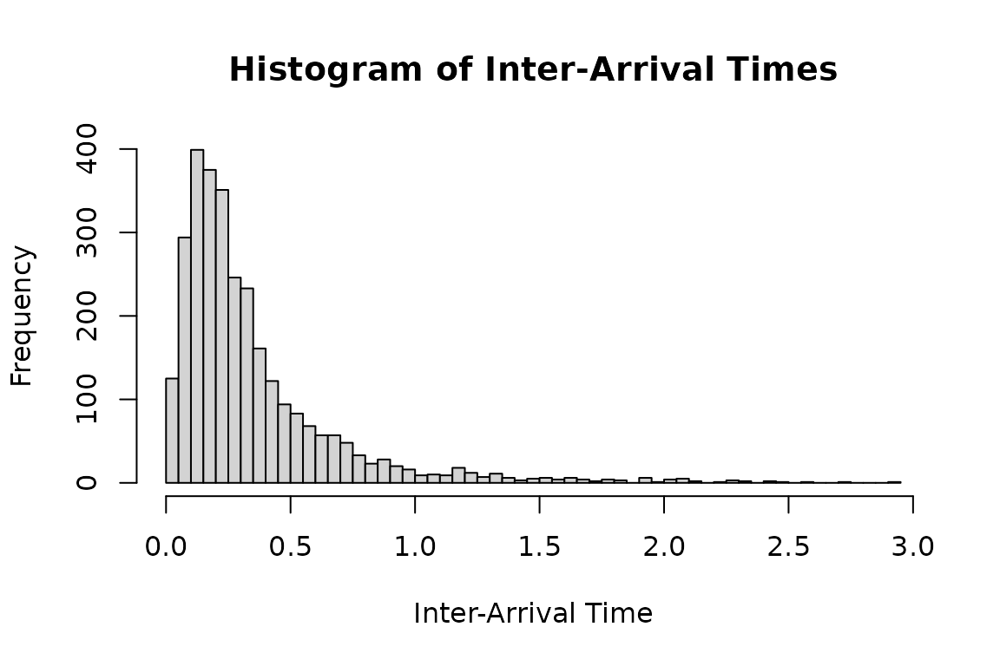
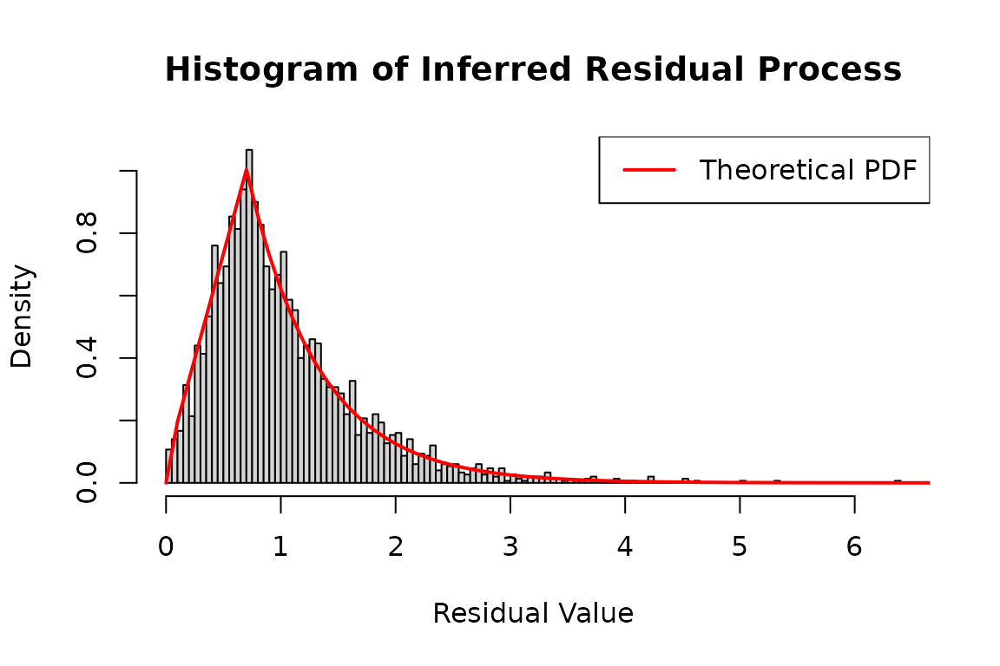
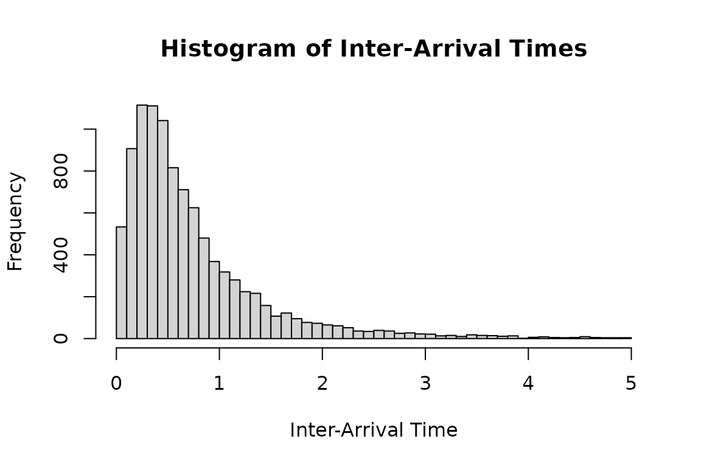
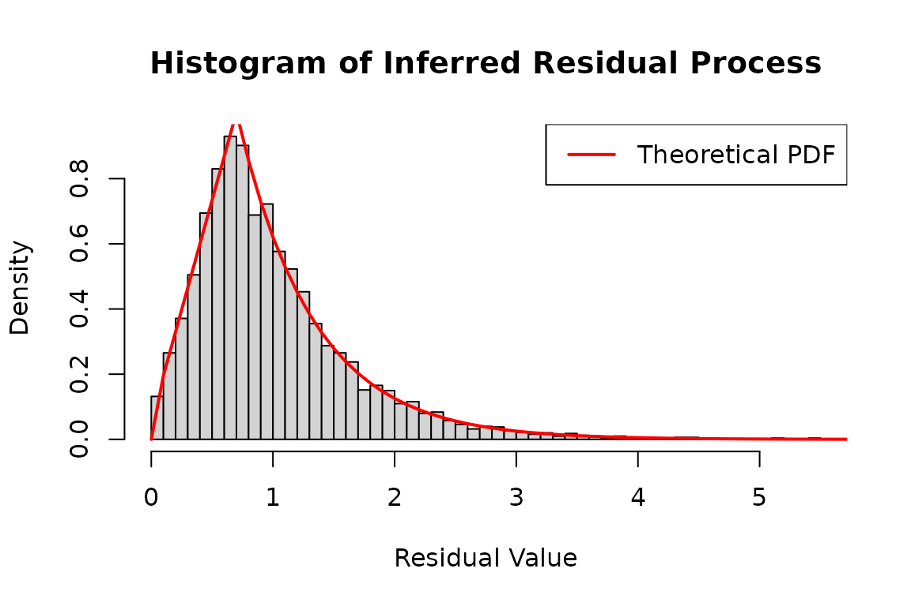
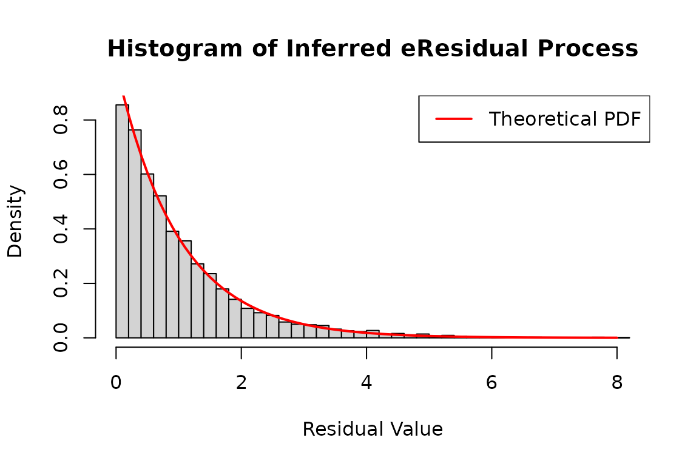
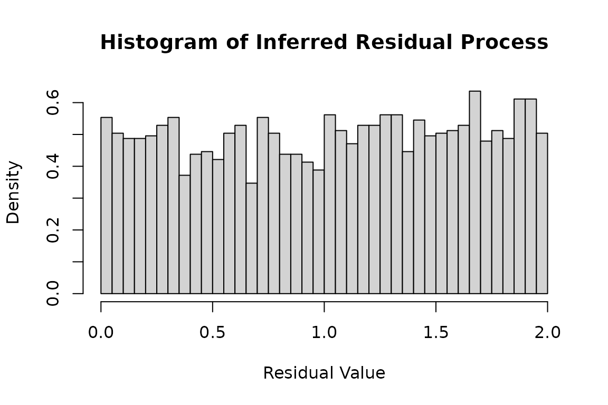

Extended example : emhawkes package
Kyungsub Lee
2025-08-26
Source:vignettes/extended_example.Rmd
extended_example.RmdBasic Hawkes model
Univariate Hawkes process
This subsection outlines the steps for constructing, running
simulations, and estimating a univariate Hawkes model. To begin, create
an hspec object, which defines the Hawkes model. The S4
class hspec contains slots for the model parameters:
mu, alpha, beta,
dimens, rmark, and impact.
In a univariate model, the basic parameters of the
model—mu, alpha, and beta—can be
given as numeric values. If numeric values are provided, they will be
converted to matrices. Below is an example of a univariate Hawkes model
without a mark.
mu1 <- 0.3; alpha1 <- 1.2; beta1 <- 1.5
hspec1 <- new("hspec", mu = mu1, alpha = alpha1, beta = beta1)
show(hspec1)
#> An object of class "hspec" of 1-dimensional Hawkes process
#>
#> Slot mu:
#> [,1]
#> [1,] 0.3
#>
#> Slot alpha:
#> [,1]
#> [1,] 1.2
#>
#> Slot beta:
#> [,1]
#> [1,] 1.5The function hsim implements simulation where the input
arguments are hspec, size, and the initial
values of the intensity component process,
lambda_component0, and the initial values of the Hawkes
processes, N0. More precisely, the intensity process of the
basic univariate Hawkes model is represented by
where the lambda_component0 denotes
If lambda_component0 is not provided, the internally
determined initial values for the intensity process are used. If
size is sufficiently large, the exact value of
lambda_component0 may not be important. The default initial
value of the counting process, N0, is zero.
set.seed(1107)
res1 <- hsim(hspec1, size = 1000)
summary(res1)
#> -------------------------------------------------------
#> Simulation result of exponential (marked) Hawkes model.
#> Realized path :
#> arrival N1 mark lambda1
#> [1,] 0.00000 0 0 0.90000
#> [2,] 0.97794 1 1 0.43838
#> [3,] 1.09001 2 1 1.43128
#> [4,] 1.28999 3 1 2.02711
#> [5,] 1.53225 4 1 2.33527
#> [6,] 1.65001 5 1 3.01139
#> [7,] 2.51807 6 1 1.36377
#> [8,] 2.81710 7 1 1.74553
#> [9,] 2.87547 8 1 2.72378
#> [10,] 3.16415 9 1 2.65016
#> [11,] 3.51378 10 1 2.40131
#> [12,] 4.22355 11 1 1.43843
#> [13,] 16.96752 12 1 0.30000
#> [14,] 17.71654 13 1 0.69015
#> [15,] 19.10293 14 1 0.49874
#> [16,] 24.06354 15 1 0.30082
#> [17,] 24.09256 16 1 1.44967
#> [18,] 28.40173 17 1 0.30366
#> [19,] 28.53743 18 1 1.28198
#> [20,] 28.56702 19 1 2.38725
#> ... with 980 more rows
#> -------------------------------------------------------The results of hsim is an S3 class hreal,
which consists of hspec, inter_arrival,
arrival, type, mark,
N, Nc, lambda,
lambda_component, rambda,
rambda_component.
hspecis the model specification.inter_arrivalis the inter-arrival time of every event.arrivalis the cumulative sum ofinter_arrival.typeis the type of events, i.e., for , and is used for a multivariate model.markis a numeric vector that represents additional information for the event.lambdarepresents , which is the left continuous and right limit version.The right continuous version of intensity is
rambda.lambda_componentrepresents , andrambda_componentis the right continuous version.
inter_arrival, type, mark,
N, and Nc start at zero. Using the
summary() function, one can print the first 20 elements of
arrival, N, and lambda. The
print() function can also be used.
By definition, we have
lambda == mu + lambda_component.
# first and third columns are the same
cbind(res1$lambda[1:5], res1$lambda_component[1:5], mu1 + res1$lambda_component[1:5])
#> [,1] [,2] [,3]
#> [1,] 0.900000 0.600000 0.900000
#> [2,] 0.438383 0.138383 0.438383
#> [3,] 1.431282 1.131282 1.431282
#> [4,] 2.027111 1.727111 2.027111
#> [5,] 2.335269 2.035269 2.335269For all rows except the first, rambda equals
lambda + alpha in this model.
# second and third columns are the same
cbind(res1$lambda[1:5], res1$rambda[1:5], res1$lambda[1:5] + alpha1)
#> [,1] [,2] [,3]
#> [1,] 0.900000 0.900000 2.100000
#> [2,] 0.438383 1.638383 1.638383
#> [3,] 1.431282 2.631282 2.631282
#> [4,] 2.027111 3.227111 3.227111
#> [5,] 2.335269 3.535269 3.535269Additionally, verify that the exponential decay is accurately represented in the model.
# By definition, the following two are equal:
res1$lambda[2:6]
#> [1] 0.438383 1.431282 2.027111 2.335269 3.011391
mu1 + (res1$rambda[1:5] - mu1) * exp(-beta1 * res1$inter_arrival[2:6])
#> [1] 0.438383 1.431282 2.027111 2.335269 3.011391The log-likelihood function is calculated using the
logLik method. In this context, the inter-arrival times and
hspec are provided as inputs to the function.
logLik(hspec1, inter_arrival = res1$inter_arrival)
#> The initial values for intensity processes are not provided. Internally determined initial values are used.
#> loglikelihood
#> -214.2385The likelihood estimation is performed using the hfit
function. The specification of the initial parameter values,
hspec0, is required. Note that only
inter_arrival is needed for this univariate model. For more
accurate simulation, it is recommended to specify lambda0,
the initial value of the lambda component. If lambda0 is
not provided, the function uses internally determined initial values. By
default, the BFGS method is employed for numerical optimization.
# initial value for numerical optimization
mu0 <- 0.5; alpha0 <- 1.0; beta0 <- 1.8
hspec0 <- new("hspec", mu = mu0, alpha = alpha0, beta = beta0)
# the intial values are provided through hspec
mle <- hfit(hspec0, inter_arrival = res1$inter_arrival)
summary(mle)
#> --------------------------------------------
#> Maximum Likelihood estimation
#> BFGS maximization, 24 iterations
#> Return code 0: successful convergence
#> Log-Likelihood: -213.4658
#> 3 free parameters
#> Estimates:
#> Estimate Std. error t value Pr(> t)
#> mu1 0.33641 0.03475 9.682 <2e-16 ***
#> alpha1 1.16654 0.09608 12.141 <2e-16 ***
#> beta1 1.52270 0.12468 12.213 <2e-16 ***
#> ---
#> Signif. codes: 0 '***' 0.001 '**' 0.01 '*' 0.05 '.' 0.1 ' ' 1
#> --------------------------------------------Bivariate Hawkes model
The intensity process of a basic bivariate Hawkes model is defined by
In a bivariate model, the parameters within the slots of
hspec are matrices. Specifically, mu is a
2-by-1 matrix, while alpha and beta are 2-by-2
matrices.
rmark is a random number generating function for marks
and is not used in non-mark models. lambda_component0 is a
2-by-2 matrix that represents the initial values of
lambda_component, which includes the set of values
lambda11, lambda12, lambda21, and
lambda22. The intensity processes are represented by
The terms
are referred to as lambda components, and lambda0
represents $_{ij}(0). The parameterlambda_component0` can
be omitted in this model, in which case internally determined initial
values will be used.
mu2 <- matrix(c(0.2), nrow = 2)
alpha2 <- matrix(c(0.5, 0.9, 0.9, 0.5), nrow = 2, byrow = TRUE)
beta2 <- matrix(c(2.25, 2.25, 2.25, 2.25), nrow = 2, byrow = TRUE)
hspec2 <- new("hspec", mu=mu2, alpha=alpha2, beta=beta2)
print(hspec2)
#> An object of class "hspec" of 2-dimensional Hawkes process
#>
#> Slot mu:
#> [,1]
#> [1,] 0.2
#> [2,] 0.2
#>
#> Slot alpha:
#> [,1] [,2]
#> [1,] 0.5 0.9
#> [2,] 0.9 0.5
#>
#> Slot beta:
#> [,1] [,2]
#> [1,] 2.25 2.25
#> [2,] 2.25 2.25To perform a simulation, use the hsim function.
set.seed(1107)
res2 <- hsim(hspec2, size=1000)
summary(res2)
#> -------------------------------------------------------
#> Simulation result of exponential (marked) Hawkes model.
#> Realized path :
#> arrival N1 N2 mark lambda1 lambda2
#> [1,] 0.00000 0 0 0 0.52941 0.52941
#> [2,] 0.57028 1 0 1 0.29130 0.29130
#> [3,] 1.66175 1 1 1 0.25073 0.28505
#> [4,] 2.17979 1 2 1 0.49638 0.38238
#> [5,] 2.47685 1 3 1 0.81319 0.54975
#> [6,] 2.64001 2 3 1 1.24825 0.78866
#> [7,] 2.70249 3 3 1 1.54519 1.49341
#> [8,] 2.94547 4 3 1 1.26810 1.46968
#> [9,] 3.39313 4 4 1 0.77271 0.99242
#> [10,] 3.52533 4 5 1 1.29379 1.15989
#> [11,] 3.56971 5 5 1 2.00432 1.52115
#> [12,] 3.70761 5 6 1 1.88965 1.82866
#> [13,] 4.30122 5 7 1 0.88106 0.75983
#> [14,] 4.34337 6 7 1 1.63800 1.16393
#> [15,] 4.40222 7 7 1 1.89764 1.83275
#> [16,] 4.58943 8 7 1 1.64219 1.86211
#> [17,] 5.14665 9 7 1 0.75437 0.93131
#> [18,] 5.18186 9 8 1 1.17407 1.70707
#> [19,] 5.36167 9 9 1 1.45050 1.53925
#> [20,] 5.89118 10 9 1 0.85331 0.75875
#> ... with 980 more rows
#> -------------------------------------------------------In multivariate models, type is crucial as it represents
the type of event.
# Under bi-variate model, there are two types, 1 or 2.
res2$type[1:10]
#> [1] 0 1 2 2 2 1 1 1 2 2In multivariate models, the column names of N are
N1, N2, N3, and so on.
res2$N[1:3, ]
#> N1 N2
#> [1,] 0 0
#> [2,] 1 0
#> [3,] 1 1Similarly, the column names of lambda are
lambda1, lambda2, lambda3, and so
on.
res2$lambda[1:3, ]
#> lambda1 lambda2
#> [1,] 0.5294118 0.5294118
#> [2,] 0.2913028 0.2913028
#> [3,] 0.2507301 0.2850475The column names of lambda_component are
lambda_component11, lambda_component12,
lambda_component13, and so on.
res2$lambda_component[1:3, ]
#> lambda11 lambda12 lambda21 lambda22
#> [1,] 0.11764706 0.211764706 0.21176471 0.117647059
#> [2,] 0.03260813 0.058694641 0.05869464 0.032608134
#> [3,] 0.04569443 0.005035631 0.08224997 0.002797573By definition, the following two expressions are equivalent:
mu2[1] + rowSums(res2$lambda_component[1:5, c("lambda11", "lambda12")])
#> [1] 0.5294118 0.2913028 0.2507301 0.4963769 0.8131889
res2$lambda[1:5, "lambda1"]
#> [1] 0.5294118 0.2913028 0.2507301 0.4963769 0.8131889From the results, we obtain vectors of realized
inter_arrival and type. A bivariate model
requires both inter_arrival and type for
estimation.
inter_arrival2 <- res2$inter_arrival
type2 <- res2$typeThe log-likelihood is computed using the logLik
function.
logLik(hspec2, inter_arrival = inter_arrival2, type = type2)
#> The initial values for intensity processes are not provided. Internally determined initial values are used.
#> loglikelihood
#> -974.2809Maximum log-likelihood estimation is performed using the
hfit function. In this process, the parameter values in
hspec0, such as mu, alpha, and
beta, serve as starting points for the numerical
optimization. For illustration purposes, we set
hspec0 <- hspec2. Since the true parameter values are
unknown in practical applications, these initial guesses are used. The
realized inter_arrival and type data are
utilized for estimation.
hspec0 <- hspec2
mle <- hfit(hspec0, inter_arrival = inter_arrival2, type = type2)
summary(mle)
#> --------------------------------------------
#> Maximum Likelihood estimation
#> BFGS maximization, 36 iterations
#> Return code 0: successful convergence
#> Log-Likelihood: -970.1408
#> 4 free parameters
#> Estimates:
#> Estimate Std. error t value Pr(> t)
#> mu1 0.19095 0.01636 11.671 < 2e-16 ***
#> alpha1.1 0.48217 0.07405 6.511 7.45e-11 ***
#> alpha1.2 0.98625 0.09495 10.387 < 2e-16 ***
#> beta1.1 2.07987 0.16952 12.269 < 2e-16 ***
#> ---
#> Signif. codes: 0 '***' 0.001 '**' 0.01 '*' 0.05 '.' 0.1 ' ' 1
#> --------------------------------------------
coef(mle)
#> mu1 alpha1.1 alpha1.2 beta1.1
#> 0.1909541 0.4821725 0.9862542 2.0798691
miscTools::stdEr(mle)
#> mu1 alpha1.1 alpha1.2 beta1.1
#> 0.01636127 0.07405118 0.09495461 0.16952428Parameter setting
This subsection explores the relationship between parameter settings
and the estimation procedure in a multivariate Hawkes model. The number
of parameters to be estimated in the model is influenced by how we
configure parameter slots such as mu, alpha,
and beta in hspec0, which specifies the
initial values.
Since the parameter slot alpha is a matrix, its elements
can either be the same or different. Consequently, the number of
parameters estimated varies depending on whether the initial settings
have identical or distinct elements.
For example, if alpha[1,1] and alpha[1,2]
in hspec0 are initially set to different values, the
numerical procedure will estimate alpha[1,1] and
alpha[1,2] separately. Conversely, if
alpha[1,1] and alpha[1,2] are the same in the
initial setting, the estimation procedure treats these parameters as
identical in the model, thus estimating only one value.
Recall that the example in the previous section features a symmetric
Hawkes model, where the matrix alpha is symmetric and all
elements of beta are identical.
print(hspec2)
#> An object of class "hspec" of 2-dimensional Hawkes process
#>
#> Slot mu:
#> [,1]
#> [1,] 0.2
#> [2,] 0.2
#>
#> Slot alpha:
#> [,1] [,2]
#> [1,] 0.5 0.9
#> [2,] 0.9 0.5
#>
#> Slot beta:
#> [,1] [,2]
#> [1,] 2.25 2.25
#> [2,] 2.25 2.25In the first estimation example, the initial value of
alpha0 is a matrix where all elements are set to the same
value of 0.75. In this configuration, hfit assumes that
alpha11, alpha12, alpha21, and
alpha22 are identical in the model, even if the actual
parameters have different values. Similarly, the parameter matrices
mu0 and beta0 are treated in the same
manner.
mu0 <- matrix(c(0.15, 0.15), nrow = 2)
alpha0 <- matrix(c(0.75, 0.75, 0.75, 0.75), nrow = 2, byrow=TRUE)
beta0 <- matrix(c(2.6, 2.6, 2.6, 2.6), nrow = 2, byrow=TRUE)
hspec0 <- new("hspec", mu=mu0, alpha=alpha0, beta=beta0)
summary(hfit(hspec0, inter_arrival = res2$inter_arrival, type = res2$type))
#> --------------------------------------------
#> Maximum Likelihood estimation
#> BFGS maximization, 44 iterations
#> Return code 0: successful convergence
#> Log-Likelihood: -979.5687
#> 3 free parameters
#> Estimates:
#> Estimate Std. error t value Pr(> t)
#> mu1 0.19125 0.01636 11.69 <2e-16 ***
#> alpha1.1 0.73981 0.05951 12.43 <2e-16 ***
#> beta1.1 2.09707 0.16524 12.69 <2e-16 ***
#> ---
#> Signif. codes: 0 '***' 0.001 '**' 0.01 '*' 0.05 '.' 0.1 ' ' 1
#> --------------------------------------------Note that in the above result, alpha1.1 falls somewhere
between the original values of alpha1.1 = 0.5 and
alpha1.2 = 0.9.
In the following second example, the elements of alpha0
are not identical but are symmetric, reflecting the original values used
in the simulation. Specifically, we have alpha11 == alpha22
and alpha12 == alpha21 in alpha0, so
alpha11 and alpha12 will be estimated
differently.
mu0 <- matrix(c(0.15, 0.15), nrow = 2)
alpha0 <- matrix(c(0.75, 0.751, 0.751, 0.75), nrow = 2, byrow=TRUE)
beta0 <- matrix(c(2.6, 2.6, 2.6, 2.6), nrow = 2, byrow=TRUE)
hspec0 <- new("hspec", mu=mu0, alpha=alpha0, beta=beta0)
summary(hfit(hspec0, inter_arrival = res2$inter_arrival, type = res2$type))
#> --------------------------------------------
#> Maximum Likelihood estimation
#> BFGS maximization, 30 iterations
#> Return code 0: successful convergence
#> Log-Likelihood: -970.1408
#> 4 free parameters
#> Estimates:
#> Estimate Std. error t value Pr(> t)
#> mu1 0.19095 0.01643 11.619 < 2e-16 ***
#> alpha1.1 0.48226 0.07421 6.499 8.1e-11 ***
#> alpha1.2 0.98626 0.09538 10.341 < 2e-16 ***
#> beta1.1 2.08008 0.17303 12.021 < 2e-16 ***
#> ---
#> Signif. codes: 0 '***' 0.001 '**' 0.01 '*' 0.05 '.' 0.1 ' ' 1
#> --------------------------------------------In the third example, the estimation is performed under the
assumption that mu1 and mu2 may differ, even
though they are the same in the original model.
mu0 <- matrix(c(0.15, 0.14), nrow = 2)
alpha0 <- matrix(c(0.75, 0.751, 0.751, 0.75), nrow = 2, byrow=TRUE)
beta0 <- matrix(c(2.6, 2.6, 2.6, 2.6), nrow = 2, byrow=TRUE)
hspec0 <- new("hspec", mu=mu0, alpha=alpha0, beta=beta0)
summary(hfit(hspec0, inter_arrival = res2$inter_arrival, type = res2$type))
#> --------------------------------------------
#> Maximum Likelihood estimation
#> BFGS maximization, 42 iterations
#> Return code 0: successful convergence
#> Log-Likelihood: -969.9914
#> 5 free parameters
#> Estimates:
#> Estimate Std. error t value Pr(> t)
#> mu1 0.18300 0.02154 8.495 < 2e-16 ***
#> mu2 0.19872 0.02203 9.020 < 2e-16 ***
#> alpha1.1 0.48149 0.07425 6.484 8.91e-11 ***
#> alpha1.2 0.98720 0.09556 10.331 < 2e-16 ***
#> beta1.1 2.07973 0.17094 12.166 < 2e-16 ***
#> ---
#> Signif. codes: 0 '***' 0.001 '**' 0.01 '*' 0.05 '.' 0.1 ' ' 1
#> --------------------------------------------By setting reduced = FALSE, all parameters are
estimated.
summary(hfit(hspec2, inter_arrival = res2$inter_arrival, type = res2$type, reduced=FALSE))
#> --------------------------------------------
#> Maximum Likelihood estimation
#> BFGS maximization, 51 iterations
#> Return code 0: successful convergence
#> Log-Likelihood: -966.5055
#> 10 free parameters
#> Estimates:
#> Estimate Std. error t value Pr(> t)
#> mu1 0.17997 0.02312 7.784 7.05e-15 ***
#> mu2 0.20060 0.02442 8.214 < 2e-16 ***
#> alpha1.1 0.44726 0.16627 2.690 0.00714 **
#> alpha2.1 1.17743 0.22909 5.140 2.75e-07 ***
#> alpha1.2 0.97048 0.14242 6.814 9.47e-12 ***
#> alpha2.2 0.48979 0.15398 3.181 0.00147 **
#> beta1.1 2.52210 1.16375 2.167 0.03022 *
#> beta2.1 3.15498 0.67702 4.660 3.16e-06 ***
#> beta1.2 1.80167 0.25695 7.012 2.35e-12 ***
#> beta2.2 1.51338 0.54476 2.778 0.00547 **
#> ---
#> Signif. codes: 0 '***' 0.001 '**' 0.01 '*' 0.05 '.' 0.1 ' ' 1
#> --------------------------------------------The same logic applies to all higher-dimensional models.
Residual process
The residual process can be extracted using the logLik()
function by setting infer = TRUE. When this option is
enabled, the logLik function returns a list that includes
the log-likelihood, inferred intensities, and the residual process. Note
that the inference is based on the object passed to the
logLik function. In the returned object,
res_process1 represents the residual process.
hrp <- new("hspec", mu = 0.3, alpha = 1.2, beta = 1.5)
res_rp <- hsim(hrp, size = 1000)
# inferred result
infered_res <- logLik(hrp, res_rp$inter_arrival, infer = TRUE)
## QQ-plot
p <- ppoints(100)
q <- quantile(infered_res$res_process1, p = p)
plot(qexp(p), q, xlab="Theoretical Quantiles",ylab="Sample Quantiles")
qqline(q, distribution=qexp,col="blue", lty=2)
In practical scenarios, the parameter values are usually unknown, so the model may be estimated before computing the residual processes.
# estimation
mle_rp <- hfit(new("hspec", mu = 0.2, alpha = 1, beta = 2),
res_rp$inter_arrival)
# construct hspec from estimation result
he <- new("hspec", mu = coef(mle_rp)["mu1"],
alpha = coef(mle_rp)["alpha1"], beta = coef(mle_rp)["beta1"])
# infer intensity
infered_res <- logLik(he, res_rp$inter_arrival, res_rp$type, infer = TRUE)
rpe <- infered_res$res_process1
p <- ppoints(100)
q <- quantile(rpe, p=p)
plot(qexp(p), q, xlab="Theoretical Quantiles",ylab="Sample Quantiles")
qqline(q, distribution=qexp,col="blue", lty=2)
In an
-dimensional
model, we can compute the residuals in a similar manner. In this case,
the object returned by the logLik function contains
residual processes. For example, in the following code,
infer_res2$res_process1 and
infer_res2$res_process2 represent the residual processes
for each type.
hrp2 <- new("hspec", mu = rep(0.3, 2),
alpha = matrix(c(1.2, 1.5, 1.5, 1.2), nrow=2),
beta = matrix(rep(3, 4), nrow=2))
res_hrp2 <- hsim(hrp2, size = 2000)
infer_res2 <- logLik(hrp2, res_hrp2$inter_arrival, res_hrp2$type, infer = TRUE)
p <- ppoints(100)
q <- quantile(c(infer_res2$res_process1, infer_res2$res_process2), p=p)
plot(qexp(p), q, xlab="Theoretical Quantiles",ylab="Sample Quantiles")
qqline(q, distribution=qexp,col="blue", lty=2)
# Infer the residual process using the log-likelihood method
# 'infer_res_dh1' contains the inferred process data based on the inter-arrival times
hist(
c(infer_res2$res_process1, infer_res2$res_process2),
breaks = 50,
probability = TRUE,
main = "Histogram of Inferred Residual Process",
xlab = "Residual Value",
ylab = "Density"
)
x <- seq(0, 8, 0.1)
lines(
x,
dexp(x),
col = 'red',
lwd = 2
)
legend("topright", legend = "Theoretical PDF", col = "red", lwd = 2)
More complicated model
Multi-kernel model
In a multi-kernel Hawkes model, type_col_map is required
for hspec. type_col_map is a list that
represents the mapping between type and column number. For example,
consider a bi-variate multi-kernel model:
where
with matrix and denoting kernel number.
For example, in a bi-variate Hawkes model with two kernels, the intensity processes are
The parameter matrix is defined by
and we should specify which columns of matrix are associated with which .
mu <- matrix(c(0.02, 0.02), nrow=2)
beta_1 <- matrix(rep(10, 4), nrow=2)
beta_2 <- matrix(rep(1, 4), nrow=2)
beta <- cbind(beta_1, beta_2)
alpha_1 <- matrix(c(3, 2,
2, 3), nrow=2, byrow=TRUE)
alpha_2 <- matrix(c(0.3, 0.2,
0.2, 0.3), nrow=2, byrow=TRUE)
alpha <- cbind(alpha_1, alpha_2)
print(alpha)
#> [,1] [,2] [,3] [,4]
#> [1,] 3 2 0.3 0.2
#> [2,] 2 3 0.2 0.3Note that
is multiplied by first and third columns of
and
is multiplied by second and fourth columns of
and hence type_col_map is
type_col_map <- list(c(1,3), # columns for dN1
c(2,4)) # columns for dN2
type_col_map
#> [[1]]
#> [1] 1 3
#>
#> [[2]]
#> [1] 2 4where type i is associated with columns of
type_col_map[[i]]. Thus,
cat("Part of alpha associated with N1: \n")
#> Part of alpha associated with N1:
alpha[, type_col_map[[1]]] # associated with N1
#> [,1] [,2]
#> [1,] 3 0.3
#> [2,] 2 0.2
cat("Part of alpha associated with N2: \n")
#> Part of alpha associated with N2:
alpha[, type_col_map[[2]]] # associated with N2
#> [,1] [,2]
#> [1,] 2 0.2
#> [2,] 3 0.3
cat("Part of beta associated with N1: \n")
#> Part of beta associated with N1:
beta[, type_col_map[[1]]] # associated with N1
#> [,1] [,2]
#> [1,] 10 1
#> [2,] 10 1
cat("Part of beta associated with N2: \n")
#> Part of beta associated with N2:
beta[, type_col_map[[2]]] # associated with N2
#> [,1] [,2]
#> [1,] 10 1
#> [2,] 10 1
h <- new("hspec", mu = mu, alpha = alpha, beta=beta, type_col_map = type_col_map)
h
#> An object of class "hspec" of 2-dimensional Hawkes process
#>
#> Slot mu:
#> [,1]
#> [1,] 0.02
#> [2,] 0.02
#>
#> Slot alpha:
#> [,1] [,2] [,3] [,4]
#> [1,] 3 2 0.3 0.2
#> [2,] 2 3 0.2 0.3
#>
#> Slot beta:
#> [,1] [,2] [,3] [,4]
#> [1,] 10 10 1 1
#> [2,] 10 10 1 1
#>
#> Slot type_col_map:
#> [[1]]
#> [1] 1 3
#>
#> [[2]]
#> [1] 2 4In addition, lambda_component0 should be provided for
simulation and estimation.
set.seed(620)
res_mk <- hsim(h, size = 3000,
# for an illustration purpose
lambda_component0 = matrix(seq(1, 1.7, 0.1), nrow = 2))
res_mk
#> -------------------------------------------------------
#> Simulation result of exponential (marked) Hawkes model.
#> An object of class "hspec" of 2-dimensional Hawkes process
#>
#> Slot mu:
#> [,1]
#> [1,] 0.02
#> [2,] 0.02
#>
#> Slot alpha:
#> [,1] [,2] [,3] [,4]
#> [1,] 3 2 0.3 0.2
#> [2,] 2 3 0.2 0.3
#>
#> Slot beta:
#> [,1] [,2] [,3] [,4]
#> [1,] 10 10 1 1
#> [2,] 10 10 1 1
#>
#> Slot type_col_map:
#> [[1]]
#> [1] 1 3
#>
#> [[2]]
#> [1] 2 4
#>
#>
#> Realized path :
#> arrival N1 N2 mark lambda1 lambda2 lambda11 lambda12 lambda13 lambda14
#> [1,] 0.0000 0 0 0 5.220 5.620 1.0000000 1.200e+00 1.4000 1.6000
#> [2,] 0.3339 1 0 1 2.247 2.397 0.0354893 4.259e-02 1.0026 1.1459
#> [3,] 1.2043 1 1 1 1.046 1.064 0.0005036 7.065e-06 0.5455 0.4799
#> [4,] 1.2103 2 1 1 3.122 4.182 0.0004743 1.884e+00 0.5423 0.6758
#> [5,] 1.3704 3 1 1 2.299 2.302 0.6051446 3.799e-01 0.7176 0.5758
#> [6,] 1.4098 3 2 1 4.238 3.474 2.4298143 2.561e-01 0.9783 0.5535
#> [7,] 1.5416 3 3 1 2.793 2.894 0.6507825 6.043e-01 0.8575 0.6605
#> [8,] 1.6639 3 4 1 2.498 2.919 0.1914158 7.660e-01 0.7588 0.7614
#> [9,] 2.0338 3 5 1 1.282 1.454 0.0047375 6.846e-02 0.5242 0.6642
#> [10,] 2.1098 4 5 1 2.276 2.981 0.0022151 9.671e-01 0.4858 0.8009
#> [11,] 2.3626 5 5 1 1.569 1.623 0.2396920 7.722e-02 0.6103 0.6220
#> [12,] 2.7052 5 6 1 1.216 1.178 0.1053725 2.511e-03 0.6462 0.4416
#> [13,] 2.7692 5 7 1 2.339 2.939 0.0555568 1.056e+00 0.6062 0.6018
#> [14,] 2.9333 6 7 1 1.818 2.272 0.0107638 5.920e-01 0.5144 0.6804
#> [15,] 3.0063 7 7 1 3.146 2.862 1.4508962 2.853e-01 0.7571 0.6325
#> [16,] 3.3222 7 8 1 1.453 1.365 0.1889842 1.211e-02 0.7707 0.4612
#> [17,] 3.3779 7 9 1 2.636 3.241 0.1082998 1.153e+00 0.7290 0.6254
#> [18,] 3.4084 8 9 1 3.931 5.226 0.0798097 2.324e+00 0.7071 0.8006
#> [19,] 3.7871 8 10 1 1.380 1.425 0.0698539 5.270e-02 0.6897 0.5482
#> [20,] 3.8329 9 10 1 2.736 3.505 0.0441702 1.298e+00 0.6588 0.7147
#> lambda21 lambda22 lambda23 lambda24
#> [1,] 1.1000000 1.300e+00 1.5000 1.7000
#> [2,] 0.0390382 4.614e-02 1.0742 1.2175
#> [3,] 0.0003383 7.654e-06 0.5336 0.5098
#> [4,] 0.0003186 2.826e+00 0.5304 0.8050
#> [5,] 0.4034302 5.699e-01 0.6224 0.6859
#> [6,] 1.6198765 3.841e-01 0.7906 0.6594
#> [7,] 0.4338551 9.064e-01 0.6930 0.8410
#> [8,] 0.1276106 1.149e+00 0.6132 1.0095
#> [9,] 0.0031583 1.027e-01 0.4236 0.9046
#> [10,] 0.0014767 1.451e+00 0.3926 1.1165
#> [11,] 0.1597947 1.158e-01 0.4602 0.8671
#> [12,] 0.0702484 3.767e-03 0.4687 0.6156
#> [13,] 0.0370378 1.584e+00 0.4397 0.8588
#> [14,] 0.0071759 8.881e-01 0.3731 0.9834
#> [15,] 0.9672641 4.280e-01 0.5328 0.9142
#> [16,] 0.1259895 1.817e-02 0.5343 0.6665
#> [17,] 0.0721999 1.730e+00 0.5053 0.9142
#> [18,] 0.0532064 3.485e+00 0.4901 1.1777
#> [19,] 0.0465693 7.905e-02 0.4726 0.8065
#> [20,] 0.0294468 1.947e+00 0.4514 1.0569
#> ... with 2980 more rows
#> -------------------------------------------------------
summary(hfit(h, res_mk$inter_arrival, res_mk$type,
lambda_component0 = matrix(seq(1, 1.7, 0.1), nrow = 2)))
#> --------------------------------------------
#> Maximum Likelihood estimation
#> BFGS maximization, 69 iterations
#> Return code 0: successful convergence
#> Log-Likelihood: 6084.702
#> 7 free parameters
#> Estimates:
#> Estimate Std. error t value Pr(> t)
#> mu1 0.011596 0.007783 1.490 0.136238
#> alpha1.1 2.488160 0.242154 10.275 < 2e-16 ***
#> alpha1.2 1.354091 0.362072 3.740 0.000184 ***
#> alpha1.3 0.057595 0.096770 0.595 0.551729
#> alpha1.4 0.253495 0.115586 2.193 0.028298 *
#> beta1.1 6.383741 0.301811 21.151 < 2e-16 ***
#> beta1.3 0.755539 0.217985 3.466 0.000528 ***
#> ---
#> Signif. codes: 0 '***' 0.001 '**' 0.01 '*' 0.05 '.' 0.1 ' ' 1
#> --------------------------------------------Synchronized intensity model
This model is basically two-kernel model and defined by little bit complicated reparameterization.
In order to handle complex re-parametrization, each slot is expressed
as a function rather than a matrix. The first argument
param is a set of parameters.
mu <- function(param = c(theta_p = 0.15, theta_n = 0.21, kappa = 0.12)){
theta <- (param["theta_n"] + param["theta_p"])/2
theta_tl <- (param["theta_n"] - param["theta_p"])/2
matrix(c(theta/2/(1 - param["kappa"]) + theta_tl/2/(1 + param["kappa"]),
theta/2/(1 - param["kappa"]) - theta_tl/2/(1 + param["kappa"])), nrow=2)
}
alpha <- function(param = c(eta = 5, nu = 3)){
zeta <- (param["eta"] + param["nu"])/2
zeta_tl <- (param["eta"] - param["nu"])/2
matrix(c(zeta, zeta_tl, zeta, -zeta_tl,
zeta, -zeta_tl, zeta, zeta_tl), nrow=2, byrow=TRUE)
}
beta <- function(param = c(beta = 12, kappa = 0.12)){
beta1 <- param["beta"] * (1 - param["kappa"])
beta2 <- param["beta"] * (1 + param["kappa"])
matrix(c(beta1, beta2, beta1, beta2,
beta1, beta2, beta1, beta2), nrow = 2, byrow = TRUE)
}
type_col_map <- list(c(1,2), c(3,4))
h_sy <- new("hspec", mu = mu, alpha = alpha, beta = beta, type_col_map = type_col_map)
h_sy
#> An object of class "hspec" of 2-dimensional Hawkes process
#>
#> Slot mu:
#> function (param = c(theta_p = 0.15, theta_n = 0.21, kappa = 0.12))
#> {
#> theta <- (param["theta_n"] + param["theta_p"])/2
#> theta_tl <- (param["theta_n"] - param["theta_p"])/2
#> matrix(c(theta/2/(1 - param["kappa"]) + theta_tl/2/(1 + param["kappa"]),
#> theta/2/(1 - param["kappa"]) - theta_tl/2/(1 + param["kappa"])),
#> nrow = 2)
#> }
#> <bytecode: 0x557df882bb10>
#>
#> Slot alpha:
#> function (param = c(eta = 5, nu = 3))
#> {
#> zeta <- (param["eta"] + param["nu"])/2
#> zeta_tl <- (param["eta"] - param["nu"])/2
#> matrix(c(zeta, zeta_tl, zeta, -zeta_tl, zeta, -zeta_tl, zeta,
#> zeta_tl), nrow = 2, byrow = TRUE)
#> }
#> <bytecode: 0x557df8a38e08>
#>
#> Slot beta:
#> function (param = c(beta = 12, kappa = 0.12))
#> {
#> beta1 <- param["beta"] * (1 - param["kappa"])
#> beta2 <- param["beta"] * (1 + param["kappa"])
#> matrix(c(beta1, beta2, beta1, beta2, beta1, beta2, beta1,
#> beta2), nrow = 2, byrow = TRUE)
#> }
#> <bytecode: 0x557df94fa080>
#>
#> Slot type_col_map:
#> [[1]]
#> [1] 1 2
#>
#> [[2]]
#> [1] 3 4
set.seed(1107)
# run simulation
res_sy <- hsim(h_sy, size = 2000, lambda_component0 = matrix(rep(1, 2 * 4), nrow=2))
summary(res_sy)
#> -------------------------------------------------------
#> Simulation result of exponential (marked) Hawkes model.
#> Realized path :
#> arrival N1 N2 mark lambda1 lambda2
#> [1,] 0.0000 0 0 0 4.11567 4.08888
#> [2,] 7.2506 0 1 1 0.11567 0.08888
#> [3,] 7.4805 0 2 1 0.42304 0.48724
#> [4,] 7.4915 1 2 1 3.09049 4.86829
#> [5,] 17.7981 2 2 1 0.11567 0.08888
#> [6,] 20.0276 2 3 1 0.11567 0.08888
#> [7,] 20.0484 2 4 1 2.56966 4.05419
#> [8,] 20.0609 3 4 1 4.94847 7.88899
#> [9,] 20.1607 4 4 1 3.58697 3.81330
#> [10,] 20.2304 5 4 1 4.09539 3.38445
#> [11,] 20.5057 5 5 1 0.56602 0.47289
#> [12,] 26.4862 6 5 1 0.11567 0.08888
#> [13,] 32.5114 6 6 1 0.11567 0.08888
#> [14,] 32.6227 6 7 1 1.12663 1.54804
#> [15,] 32.6316 6 8 1 3.79509 5.94053
#> [16,] 32.6480 7 8 1 5.81283 9.13210
#> [17,] 32.6921 7 9 1 6.87877 7.59586
#> [18,] 32.7953 8 9 1 3.51752 4.17621
#> [19,] 32.9249 8 10 1 2.20298 1.94570
#> [20,] 34.7648 9 10 1 0.11567 0.08888
#> ... with 1980 more rows
#> -------------------------------------------------------The estimation is based on function arguments param. In
addition, the initial values of the numerical optimization is the
default values specified in param. Note that the same name
arguments are treated as the same parameter. kappa is in
both of mu and beta, but only one
kappa appears in the estimation result.
fit_sy <- hfit(h_sy, inter_arrival=res_sy$inter_arrival,
type=res_sy$type,
lambda_component0 = matrix(rep(1, 2 * 4), nrow=2))
summary(fit_sy)
#> --------------------------------------------
#> Maximum Likelihood estimation
#> BFGS maximization, 77 iterations
#> Return code 0: successful convergence
#> Log-Likelihood: -260.6273
#> 6 free parameters
#> Estimates:
#> Estimate Std. error t value Pr(> t)
#> theta_p 0.08291 0.01587 5.223 1.76e-07 ***
#> theta_n 0.16264 0.01695 9.594 < 2e-16 ***
#> kappa 0.40990 0.02294 17.866 < 2e-16 ***
#> eta 5.23253 0.36946 14.163 < 2e-16 ***
#> nu 2.89429 0.32969 8.779 < 2e-16 ***
#> beta 18.01820 NaN NaN NaN
#> ---
#> Signif. codes: 0 '***' 0.001 '**' 0.01 '*' 0.05 '.' 0.1 ' ' 1
#> --------------------------------------------Extended model
The following family of extended multi-variate marked Hawkes models are implemented:
where the kernel is represented by
and
is a constant matrix,
is additional impacts on intensities, which may depend on mark, or any information generated by underlying processes,
is exponential decaying matrix such that ,
denotes the random measures defined on the product of time and mark spaces.
Linear impact model
In the linear impact model,
impact represents
,
the impact of mark on future intensity. For details, see Marked
Hawkes process modeling of price dynamics and volatility
estimation.
It is a function, and the first argument is param
represents the parameter of the model. impact() function
can have additional arguments related to the model specification or
generated path, such as n, mark, etc. Do not
miss ... as the ellipsis is omitted, an error occurs.
rmark() is a function that generate marks for
simulation.
mu <- matrix(c(0.15, 0.15), nrow=2)
alpha <- matrix(c(0.75, 0.6, 0.6, 0.75), nrow=2, byrow=T)
beta <- matrix(c(2.6, 2.6, 2.6, 2.6), nrow=2)
rmark <- function(param = c(p=0.65), ...){
rgeom(1, p=param[1]) + 1
}
impact <- function(param = c(eta1=0.2), alpha, n, mark, ...){
ma <- matrix(rep(mark[n]-1, 4), nrow = 2)
ma * matrix( rep(param["eta1"], 4), nrow=2)
}
hi <- new("hspec", mu=mu, alpha=alpha, beta=beta,
rmark = rmark,
impact=impact)
hi
#> An object of class "hspec" of 2-dimensional Hawkes process
#>
#> Slot mu:
#> [,1]
#> [1,] 0.15
#> [2,] 0.15
#>
#> Slot alpha:
#> [,1] [,2]
#> [1,] 0.75 0.60
#> [2,] 0.60 0.75
#>
#> Slot beta:
#> [,1] [,2]
#> [1,] 2.6 2.6
#> [2,] 2.6 2.6
#>
#> Slot impact:
#> function (param = c(eta1 = 0.2), alpha, n, mark, ...)
#> {
#> ma <- matrix(rep(mark[n] - 1, 4), nrow = 2)
#> ma * matrix(rep(param["eta1"], 4), nrow = 2)
#> }
#>
#> Slot rmark:
#> function (param = c(p = 0.65), ...)
#> {
#> rgeom(1, p = param[1]) + 1
#> }
set.seed(1107)
res_impact <- hsim(hi, size=1000, lambda_component0 = matrix(rep(0.1,4), nrow=2))
summary(res_impact)
#> -------------------------------------------------------
#> Simulation result of exponential (marked) Hawkes model.
#> Realized path :
#> arrival N1 N2 mark lambda1 lambda2
#> [1,] 0.0000 0 0 0 0.35000 0.35000
#> [2,] 1.3001 0 1 1 0.15681 0.15681
#> [3,] 2.5585 1 1 2 0.17302 0.17871
#> [4,] 2.7982 1 2 1 0.67171 0.59433
#> [5,] 3.0525 2 2 2 0.72904 0.76653
#> [6,] 3.3929 3 2 1 0.78108 0.73464
#> [7,] 3.4509 4 2 3 1.33764 1.16872
#> [8,] 3.5101 5 2 2 2.15429 1.88085
#> [9,] 3.5837 6 2 1 2.58987 2.24016
#> [10,] 3.6041 7 2 1 3.17455 2.70074
#> [11,] 3.7053 8 2 1 3.05159 2.57205
#> [12,] 3.9277 9 2 1 2.19788 1.84482
#> [13,] 3.9610 10 2 1 2.71584 2.25450
#> [14,] 4.2448 11 2 1 1.73576 1.44339
#> [15,] 4.7277 12 2 4 0.81551 0.68947
#> [16,] 5.1473 12 3 1 0.82698 0.73426
#> [17,] 5.3229 12 4 2 0.95877 0.99505
#> [18,] 5.4219 13 4 1 1.39371 1.53772
#> [19,] 5.4869 14 4 2 1.83388 1.82882
#> [20,] 5.8857 14 5 1 1.08385 1.02887
#> ... with 980 more rows
#> -------------------------------------------------------
fit <- hfit(hi,
inter_arrival = res_impact$inter_arrival,
type = res_impact$type,
mark = res_impact$mark,
lambda_component0 = matrix(rep(0.1,4), nrow=2))
summary(fit)
#> --------------------------------------------
#> Maximum Likelihood estimation
#> BFGS maximization, 38 iterations
#> Return code 0: successful convergence
#> Log-Likelihood: -1525.501
#> 5 free parameters
#> Estimates:
#> Estimate Std. error t value Pr(> t)
#> mu1 0.13190 0.00891 14.804 <2e-16 ***
#> alpha1.1 0.67609 0.07742 8.732 <2e-16 ***
#> alpha1.2 0.60345 0.07211 8.368 <2e-16 ***
#> beta1.1 2.22126 0.16730 13.277 <2e-16 ***
#> eta1 0.11635 0.05549 2.097 0.036 *
#> ---
#> Signif. codes: 0 '***' 0.001 '**' 0.01 '*' 0.05 '.' 0.1 ' ' 1
#> --------------------------------------------For a special case of linear impact function, the following
implementation is recommended. In a marked Hawkes model, the additional
linear impact can be represented by slot eta. In this
model, the intensity process is
rmark <- function(param = c(p=0.65), ...){
rgeom(1, p=param[1]) + 1
}
h <- new("hspec", mu=0.15, alpha=0.7, beta=1.6, eta=0.3,
rmark = rmark)
h
#> An object of class "hspec" of 1-dimensional Hawkes process
#>
#> Slot mu:
#> [,1]
#> [1,] 0.15
#>
#> Slot alpha:
#> [,1]
#> [1,] 0.7
#>
#> Slot beta:
#> [,1]
#> [1,] 1.6
#>
#> Slot eta:
#> [,1]
#> [1,] 0.3
#>
#> Slot rmark:
#> function (param = c(p = 0.65), ...)
#> {
#> rgeom(1, p = param[1]) + 1
#> }
set.seed(1107)
res <- hsim(h, size = 1000)
summary(res)
#> -------------------------------------------------------
#> Simulation result of exponential (marked) Hawkes model.
#> Realized path :
#> arrival N1 mark lambda1
#> [1,] 0.0000 0 0 0.20833
#> [2,] 1.9559 1 1 0.15255
#> [3,] 3.2143 2 1 0.24381
#> [4,] 3.9750 3 1 0.38501
#> [5,] 4.5731 4 1 0.50912
#> [6,] 7.7740 5 1 0.15632
#> [7,] 11.9290 6 2 0.15092
#> [8,] 13.4270 7 1 0.24108
#> [9,] 23.3482 8 1 0.15000
#> [10,] 31.9666 9 3 0.15000
#> [11,] 32.0257 10 2 1.33257
#> [12,] 32.1598 11 1 1.91124
#> [13,] 36.9851 12 1 0.15109
#> [14,] 37.1167 13 2 0.71795
#> [15,] 38.4261 14 1 0.34298
#> [16,] 38.9803 15 1 0.51792
#> [17,] 42.9827 16 2 0.15177
#> [18,] 48.4580 17 1 0.15016
#> [19,] 48.7737 18 1 0.57247
#> [20,] 48.7910 19 2 1.24194
#> ... with 980 more rows
#> -------------------------------------------------------
fit <- hfit(h,
inter_arrival = res$inter_arrival,
type = res$type,
mark = res$mark)
summary(fit)
#> --------------------------------------------
#> Maximum Likelihood estimation
#> BFGS maximization, 37 iterations
#> Return code 0: successful convergence
#> Log-Likelihood: -1684.238
#> 4 free parameters
#> Estimates:
#> Estimate Std. error t value Pr(> t)
#> mu1 0.14557 0.00847 17.187 < 2e-16 ***
#> alpha1 0.63917 0.06892 9.275 < 2e-16 ***
#> beta1 1.48983 0.12320 12.092 < 2e-16 ***
#> eta1 0.33626 0.07723 4.354 1.34e-05 ***
#> ---
#> Signif. codes: 0 '***' 0.001 '**' 0.01 '*' 0.05 '.' 0.1 ' ' 1
#> --------------------------------------------If you want to estimate the mark distribution also, then
dmark slot that describes the density function of mark is
required.
h_md <- h
h_md@dmark <- function(param = c(p = 0.1), n=n, mark=mark, ...){
dgeom(mark[n] - 1, prob = param["p"])
}
mle_md <- hfit(h_md,
inter_arrival = res$inter_arrival, type = res$type, mark = res$mark)
summary(mle_md)
#> --------------------------------------------
#> Maximum Likelihood estimation
#> BFGS maximization, 46 iterations
#> Return code 0: successful convergence
#> Log-Likelihood: -2657.079
#> 5 free parameters
#> Estimates:
#> Estimate Std. error t value Pr(> t)
#> mu1 0.145574 0.008468 17.190 < 2e-16 ***
#> alpha1 0.639168 0.069753 9.163 < 2e-16 ***
#> beta1 1.489843 0.124301 11.986 < 2e-16 ***
#> eta1 0.336259 0.076904 4.372 1.23e-05 ***
#> p 0.658970 0.012203 54.002 < 2e-16 ***
#> ---
#> Signif. codes: 0 '***' 0.001 '**' 0.01 '*' 0.05 '.' 0.1 ' ' 1
#> --------------------------------------------Hawkes flocking model
The function is not necessarily depend on mark. In the Hawkes flocking model, the kernel component is represented by
where
For details, see Systemic risk in market microstructure of crude oil and gasoline futures prices: A Hawkes flocking model approach.
In the basic model, alpha is a matrix, but it can be a
function as in the following code. The function alpha
simply return a
matrix but by doing so, we can fix some of elements as specific vales
when estimating. When estimating, the optimization is only applied for
the specified parameters in the argument param. In the case
of simulation, there is no difference whether the parameter set is
represented by a matrix or a function.
mu <- matrix(c(0.02, 0.02, 0.04, 0.04), nrow = 4)
alpha <- function(param = c(alpha11 = 0.2, alpha12 = 0.3, alpha33 = 0.3, alpha34 = 0.4)){
matrix(c(param["alpha11"], param["alpha12"], 0, 0,
param["alpha12"], param["alpha11"], 0, 0,
0, 0, param["alpha33"], param["alpha34"],
0, 0, param["alpha34"], param["alpha33"]), nrow = 4, byrow = TRUE)
}
beta <- matrix(c(rep(0.7, 8), rep(1.1, 8)), nrow = 4, byrow = TRUE)impact() function is little bit complicated, but it is
nothing more than expressing the definition of the model to an R
function. Note that we specify N=N, n=n in the argument.
N is for counting process
and n denotes the time step. Both are needed to implement
the function body and it is required to specify in the argument.
… also should not be omitted.
impact <- function(param = c(alpha1n=0.25, alpha1w=0.1, alpha2n=0.1, alpha2w=0.2),
N=N, n=n, ...){
Psi <- matrix(c(0, 0, param['alpha1w'], param['alpha1n'],
0, 0, param['alpha1n'], param['alpha1w'],
param['alpha2w'], param['alpha2n'], 0, 0,
param['alpha2n'], param['alpha2w'], 0, 0), nrow=4, byrow=TRUE)
ind <- N[,"N1"][n] - N[,"N2"][n] > N[,"N3"][n] - N[,"N4"][n]
km <- matrix(c(!ind, !ind, !ind, !ind,
ind, ind, ind, ind,
ind, ind, ind, ind,
!ind, !ind, !ind, !ind), nrow = 4, byrow = TRUE)
km * Psi
}
hspec_fl <- new("hspec",
mu = mu, alpha = alpha, beta = beta, impact = impact)
hspec_fl
#> An object of class "hspec" of 4-dimensional Hawkes process
#>
#> Slot mu:
#> [,1]
#> [1,] 0.02
#> [2,] 0.02
#> [3,] 0.04
#> [4,] 0.04
#>
#> Slot alpha:
#> function (param = c(alpha11 = 0.2, alpha12 = 0.3, alpha33 = 0.3,
#> alpha34 = 0.4))
#> {
#> matrix(c(param["alpha11"], param["alpha12"], 0, 0, param["alpha12"],
#> param["alpha11"], 0, 0, 0, 0, param["alpha33"], param["alpha34"],
#> 0, 0, param["alpha34"], param["alpha33"]), nrow = 4,
#> byrow = TRUE)
#> }
#> <bytecode: 0x557df34f5bc0>
#>
#> Slot beta:
#> [,1] [,2] [,3] [,4]
#> [1,] 0.7 0.7 0.7 0.7
#> [2,] 0.7 0.7 0.7 0.7
#> [3,] 1.1 1.1 1.1 1.1
#> [4,] 1.1 1.1 1.1 1.1
#>
#> Slot impact:
#> function (param = c(alpha1n = 0.25, alpha1w = 0.1, alpha2n = 0.1,
#> alpha2w = 0.2), N = N, n = n, ...)
#> {
#> Psi <- matrix(c(0, 0, param["alpha1w"], param["alpha1n"],
#> 0, 0, param["alpha1n"], param["alpha1w"], param["alpha2w"],
#> param["alpha2n"], 0, 0, param["alpha2n"], param["alpha2w"],
#> 0, 0), nrow = 4, byrow = TRUE)
#> ind <- N[, "N1"][n] - N[, "N2"][n] > N[, "N3"][n] - N[, "N4"][n]
#> km <- matrix(c(!ind, !ind, !ind, !ind, ind, ind, ind, ind,
#> ind, ind, ind, ind, !ind, !ind, !ind, !ind), nrow = 4,
#> byrow = TRUE)
#> km * Psi
#> }
set.seed(1107)
hr_fl <- hsim(hspec_fl, size=2000)
summary(hr_fl)
#> -------------------------------------------------------
#> Simulation result of exponential (marked) Hawkes model.
#> Realized path :
#> arrival N1 N2 N3 N4 mark lambda1 lambda2 lambda3 lambda4
#> [1,] 0.00000 0 0 0 0 0 0.070000 0.070000 0.110000 0.110000
#> [2,] 0.84055 0 0 1 0 1 0.047761 0.047761 0.067768 0.067768
#> [3,] 7.35095 0 0 2 0 1 0.021340 0.020291 0.040254 0.040332
#> [4,] 8.74603 1 0 2 0 1 0.058165 0.020110 0.104718 0.126289
#> [5,] 29.54186 2 0 2 0 1 0.020000 0.020000 0.040000 0.040000
#> [6,] 30.90333 2 1 2 0 1 0.097114 0.135671 0.040000 0.062366
#> [7,] 31.08275 3 1 2 0 1 0.352605 0.298414 0.040000 0.222539
#> [8,] 33.42583 4 1 2 0 1 0.123299 0.132184 0.040000 0.061465
#> [9,] 33.75532 5 1 2 0 1 0.260826 0.347283 0.179195 0.054939
#> [10,] 34.28018 6 1 2 0 1 0.325287 0.454414 0.230420 0.048387
#> [11,] 35.06698 6 2 2 0 1 0.311303 0.443397 0.204307 0.043530
#> [12,] 35.31209 6 3 2 0 1 0.518076 0.545110 0.241844 0.042695
#> [13,] 35.91748 6 4 2 0 1 0.542398 0.494637 0.195086 0.041385
#> [14,] 36.30025 7 4 2 0 1 0.649096 0.536065 0.141792 0.172180
#> [15,] 36.96094 7 5 2 0 1 0.542096 0.533891 0.185908 0.103906
#> [16,] 36.99520 7 5 2 1 1 0.822615 0.716974 0.180512 0.294145
#> [17,] 37.01805 8 5 2 1 1 0.809878 0.804326 0.567094 0.580389
#> [18,] 37.57785 9 5 2 1 1 0.688962 0.752790 0.432793 0.331931
#> [19,] 39.12437 9 5 2 2 1 0.314339 0.369832 0.148166 0.093268
#> [20,] 40.15404 10 5 2 2 1 0.163160 0.238789 0.203723 0.153817
#> ... with 1980 more rows
#> -------------------------------------------------------
fit_fl <- hfit(hspec_fl, hr_fl$inter_arrival, hr_fl$type)
summary(fit_fl)
#> --------------------------------------------
#> Maximum Likelihood estimation
#> BFGS maximization, 84 iterations
#> Return code 0: successful convergence
#> Log-Likelihood: -3050.319
#> 12 free parameters
#> Estimates:
#> Estimate Std. error t value Pr(> t)
#> mu1 0.028055 0.004311 6.509 7.59e-11 ***
#> mu3 0.033179 0.004284 7.745 9.53e-15 ***
#> alpha11 0.199720 0.029151 6.851 7.32e-12 ***
#> alpha12 0.312236 0.030731 10.160 < 2e-16 ***
#> alpha33 0.283861 0.037992 7.472 7.93e-14 ***
#> alpha34 0.341250 0.041153 8.292 < 2e-16 ***
#> beta1.1 0.734703 0.054270 13.538 < 2e-16 ***
#> beta3.1 0.899924 0.081923 10.985 < 2e-16 ***
#> alpha1n 0.250338 0.044096 5.677 1.37e-08 ***
#> alpha1w 0.107483 0.030036 3.579 0.000346 ***
#> alpha2n 0.083683 0.038739 2.160 0.030761 *
#> alpha2w 0.172788 0.034234 5.047 4.48e-07 ***
#> ---
#> Signif. codes: 0 '***' 0.001 '**' 0.01 '*' 0.05 '.' 0.1 ' ' 1
#> --------------------------------------------Bid-ask price model
In this model, we use a system of counting processes with the corresponding conditional intensities to describe the bid-ask price processes:
The ask price process and the bid price process is . The mid price process is plus initial mid price level.
The base intensity process is
where is the absolute level of the bid-ask spread with implying the minimum level. For details, see Modeling bid and ask price dynamics with an extended Hawkes process and its empirical applications for high-frequency stock market data.
Note that in the following code of the definition of mu,
n is needed to represent time
and Nc is needed to calculate the level and mid price.
# presumed initial bid and ask prices
initial_ask_price <- 1250 #cents
initial_bid_price <- 1150 #cents
initial_level <- round((initial_ask_price - initial_bid_price) - 1)
initial_mid_price <- (initial_bid_price + initial_ask_price) / 2
mu <- function(param = c(mu1 = 0.08, zeta1 = 0.10), n=n, Nc=Nc, ...){
if(n == 1){
level <- initial_level
mid <- initial_mid_price
} else {
level <- Nc[n-1,1] - Nc[n-1,2] - (Nc[n-1,3] - Nc[n-1,4]) + initial_level
ask <- initial_ask_price + (Nc[n-1,1] - Nc[n-1,2])
bid <- initial_bid_price + (Nc[n-1,3] - Nc[n-1,4])
mid <- (ask + bid) / 2
}
if(level <= 0){
matrix(c(param["mu1"], 0,
0, param["mu1"]), nrow = 4)
} else {
matrix(c(param["mu1"], param["zeta1"] * level / mid,
param["zeta1"]*level / mid, param["mu1"]), nrow = 4)
}
}In addition, the kernel is represented by
where
for constant and is a component of such that
In the following code, we separate the constant part of
as alpha and stochastic part as impact. To
represent
,
we need lambda_component. Note that
alpha <- function(param = c(alpha_s1=4, alpha_m=26, alpha_s2=5,
alpha_w1=11, alpha_w2=7)){
matrix(c(param["alpha_s1"], param["alpha_m"], param["alpha_s2"], 0,
param["alpha_w1"], 0, 0, param["alpha_w2"],
param["alpha_w2"], 0, 0, param["alpha_w1"],
0, param["alpha_s2"], param["alpha_m"], param["alpha_s1"]), nrow = 4, byrow = TRUE)
}
impact <- function(param = c(xi = 2.7), n=n, Nc=Nc, lambda_component = lambda_component, ... ){
if(n == 1){
level <- initial_level
# mid <- initial_mid_price
} else {
level <- Nc[n,1] - Nc[n,2] - (Nc[n,3] - Nc[n,4]) + initial_level
ask <- initial_ask_price + (Nc[n,1] - Nc[n,2])
bid <- initial_bid_price + (Nc[n,3] - Nc[n,4])
mid <- (ask + bid)/2
}
lambda_component_matrix <- matrix(lambda_component[n, ], nrow=4, byrow=TRUE)
l2 <- sum(lambda_component_matrix[2,]) # sum of second row
l3 <- sum(lambda_component_matrix[3,]) # sum of third row
im <- matrix(c(0, 0, 0, 0,
0, -l2 + param["xi"]*level/mid, -l2 + param["xi"]*level/mid, 0,
0, -l3 + param["xi"]*level/mid, -l3 + param["xi"]*level/mid, 0,
0, 0, 0, 0), nrow = 4, byrow = TRUE)
}
beta <- matrix(rep(50, 16), nrow = 4, byrow=TRUE)
rmark <- function(n=n, Nc=Nc, type, ...){
if(n == 1){
level <- initial_level
} else {
level <- Nc[n-1,1] - Nc[n-1,2] - (Nc[n-1,3] - Nc[n-1,4]) + initial_level
}
if (type[n] == 2 | type[n] == 3){
min(level, rgeom(1, p=0.65) + 1)
} else {
rgeom(1, p=0.65) + 1
}
}
h_ba <- new("hspec", mu = mu, alpha = alpha, beta = beta, impact=impact, rmark = rmark)
h_ba
#> An object of class "hspec" of 4-dimensional Hawkes process
#>
#> Slot mu:
#> function (param = c(mu1 = 0.08, zeta1 = 0.1), n = n, Nc = Nc,
#> ...)
#> {
#> if (n == 1) {
#> level <- initial_level
#> mid <- initial_mid_price
#> }
#> else {
#> level <- Nc[n - 1, 1] - Nc[n - 1, 2] - (Nc[n - 1, 3] -
#> Nc[n - 1, 4]) + initial_level
#> ask <- initial_ask_price + (Nc[n - 1, 1] - Nc[n - 1,
#> 2])
#> bid <- initial_bid_price + (Nc[n - 1, 3] - Nc[n - 1,
#> 4])
#> mid <- (ask + bid)/2
#> }
#> if (level <= 0) {
#> matrix(c(param["mu1"], 0, 0, param["mu1"]), nrow = 4)
#> }
#> else {
#> matrix(c(param["mu1"], param["zeta1"] * level/mid, param["zeta1"] *
#> level/mid, param["mu1"]), nrow = 4)
#> }
#> }
#>
#> Slot alpha:
#> function (param = c(alpha_s1 = 4, alpha_m = 26, alpha_s2 = 5,
#> alpha_w1 = 11, alpha_w2 = 7))
#> {
#> matrix(c(param["alpha_s1"], param["alpha_m"], param["alpha_s2"],
#> 0, param["alpha_w1"], 0, 0, param["alpha_w2"], param["alpha_w2"],
#> 0, 0, param["alpha_w1"], 0, param["alpha_s2"], param["alpha_m"],
#> param["alpha_s1"]), nrow = 4, byrow = TRUE)
#> }
#> <bytecode: 0x557df34ac2e8>
#>
#> Slot beta:
#> [,1] [,2] [,3] [,4]
#> [1,] 50 50 50 50
#> [2,] 50 50 50 50
#> [3,] 50 50 50 50
#> [4,] 50 50 50 50
#>
#> Slot impact:
#> function (param = c(xi = 2.7), n = n, Nc = Nc, lambda_component = lambda_component,
#> ...)
#> {
#> if (n == 1) {
#> level <- initial_level
#> }
#> else {
#> level <- Nc[n, 1] - Nc[n, 2] - (Nc[n, 3] - Nc[n, 4]) +
#> initial_level
#> ask <- initial_ask_price + (Nc[n, 1] - Nc[n, 2])
#> bid <- initial_bid_price + (Nc[n, 3] - Nc[n, 4])
#> mid <- (ask + bid)/2
#> }
#> lambda_component_matrix <- matrix(lambda_component[n, ],
#> nrow = 4, byrow = TRUE)
#> l2 <- sum(lambda_component_matrix[2, ])
#> l3 <- sum(lambda_component_matrix[3, ])
#> im <- matrix(c(0, 0, 0, 0, 0, -l2 + param["xi"] * level/mid,
#> -l2 + param["xi"] * level/mid, 0, 0, -l3 + param["xi"] *
#> level/mid, -l3 + param["xi"] * level/mid, 0, 0, 0,
#> 0, 0), nrow = 4, byrow = TRUE)
#> }
#>
#> Slot rmark:
#> function (n = n, Nc = Nc, type, ...)
#> {
#> if (n == 1) {
#> level <- initial_level
#> }
#> else {
#> level <- Nc[n - 1, 1] - Nc[n - 1, 2] - (Nc[n - 1, 3] -
#> Nc[n - 1, 4]) + initial_level
#> }
#> if (type[n] == 2 | type[n] == 3) {
#> min(level, rgeom(1, p = 0.65) + 1)
#> }
#> else {
#> rgeom(1, p = 0.65) + 1
#> }
#> }
set.seed(1107)
hr_ba <- hsim(h_ba, size=1000, lambda_component0 = matrix(rep(1, 16), 4))
summary(hr_ba)
#> -------------------------------------------------------
#> Simulation result of exponential (marked) Hawkes model.
#> Realized path :
#> arrival N1 N2 N3 N4 mark lambda1 lambda2 lambda3 lambda4
#> [1,] 0.0000 0 0 0 0 0 4.08000 4.0082500 4.0082500 4.0800
#> [2,] 3.6673 1 0 0 0 2 0.08000 0.0082500 0.0082500 0.0800
#> [3,] 6.9225 2 0 0 0 1 0.08000 0.0084097 0.0084097 0.0800
#> [4,] 20.0251 2 0 0 1 1 0.08000 0.0084894 0.0084894 0.0800
#> [5,] 24.3957 2 0 0 2 3 0.08000 0.0085762 0.0085762 0.0800
#> [6,] 24.4026 2 0 1 2 1 0.08000 4.9856950 7.8296138 2.9239
#> [7,] 27.9067 3 0 1 2 1 0.08000 0.0087500 0.0087500 0.0800
#> [8,] 27.9378 3 1 1 2 1 0.92442 2.3309869 1.4865661 0.0800
#> [9,] 33.8868 3 1 2 2 2 0.08000 0.0087500 0.0087500 0.0800
#> [10,] 33.8900 3 1 2 3 1 4.33027 0.2054120 0.2054120 22.1814
#> [11,] 34.3764 4 1 2 3 1 0.08000 0.0086631 0.0086631 0.0800
#> [12,] 34.4342 4 2 2 3 1 0.30328 0.6227650 0.3994842 0.0800
#> [13,] 36.5641 5 2 2 3 2 0.08000 0.0086631 0.0086631 0.0800
#> [14,] 36.5658 5 3 2 3 2 3.74917 10.0990280 6.4298623 0.0800
#> [15,] 40.4590 5 3 2 4 1 0.08000 0.0086631 0.0086631 0.0800
#> [16,] 40.4666 5 3 3 4 1 0.08000 4.8059475 7.5472032 2.8213
#> [17,] 43.8835 6 3 3 4 5 0.08000 0.0086631 0.0086631 0.0800
#> [18,] 44.8818 7 3 3 4 2 0.08000 0.0090607 0.0090607 0.0800
#> [19,] 47.6976 7 3 3 5 2 0.08000 0.0092193 0.0092193 0.0800
#> [20,] 51.7138 8 3 3 5 1 0.08000 0.0093932 0.0093932 0.0800
#> ... with 980 more rows
#> -------------------------------------------------------As a separate log-likelihood estimation performed, the parameter for mark distribution is not estimated.
logLik(h_ba, inter_arrival = hr_ba$inter_arrival, type = hr_ba$type, Nc = hr_ba$Nc,
lambda_component0 = matrix(rep(1, 16), 4))
#> loglikelihood
#> -1817.794
mle_ba <- hfit(h_ba, inter_arrival = hr_ba$inter_arrival, type = hr_ba$type,
lambda_component0 = matrix(rep(1, 16), 4))
summary(mle_ba)
#> --------------------------------------------
#> Maximum Likelihood estimation
#> BFGS maximization, 37 iterations
#> Return code 0: successful convergence
#> Log-Likelihood: -1810.43
#> 9 free parameters
#> Estimates:
#> Estimate Std. error t value Pr(> t)
#> mu1 0.069541 0.003583 19.407 < 2e-16 ***
#> zeta1 0.135214 0.010696 12.641 < 2e-16 ***
#> alpha_s1 4.656127 1.091747 4.265 2e-05 ***
#> alpha_m 23.554240 NaN NaN NaN
#> alpha_s2 5.849631 6.305055 0.928 0.353528
#> alpha_w1 10.283690 2.860066 3.596 0.000324 ***
#> alpha_w2 7.402715 2.299566 3.219 0.001286 **
#> beta1.1 51.868593 3.094326 16.762 < 2e-16 ***
#> xi 2.376550 NaN NaN NaN
#> ---
#> Signif. codes: 0 '***' 0.001 '**' 0.01 '*' 0.05 '.' 0.1 ' ' 1
#> --------------------------------------------Point process with flexible residual
One-dimensional model
This code demonstrates how to create a point process with a flexible
residual structure. For details, see Self
and mutually exciting point process embedding flexible residuals and
intensity with discretely Markovian dynamics. The distribution used
in this example is a combination of a trapezoid and an exponential
distribution. The dresidual and presidual
functions receive their necessary parameters bundled into a param
vector. In the context of a Hawkes process model, these functions
correspond to the case where the residuals are unit exponential
distributions.
mu1_d <- 0.5; alpha1_d <- 1; beta1_d <- 1.2; a <- 0.7; ell <- 1.6
hspec1_d <- new("hspec", mu=mu1_d, alpha=alpha1_d, beta=beta1_d,
rresidual = function(size) rtzexp(n=size, a = a, ell = ell),
dresidual = function(x, param = c(a = a, ell = ell))
dtzexp(x, a = param["a"], ell = param["ell"]),
presidual = function(q, param = c(a = a, ell = ell))
ptzexp(q, a = param["a"], ell = param["ell"]),
qresidual = function(p, param = c(a = a, ell = ell))
qtzexp(p, a = param["a"], ell = param["ell"]))
dh1_real <- hsim(hspec1_d, size = 3000)
hist(
dh1_real$inter_arrival[dh1_real$inter_arrival < 3],
breaks = 50,
main = "Histogram of Inter-Arrival Times",
xlab = "Inter-Arrival Time",
ylab = "Frequency"
)
This R code snippet demonstrates how to analyze the residual process
of a point process model using a flexible distribution. The logLik
function is used to compute the log-likelihood of observed inter-arrival
times (dh1_real$inter_arrival) based on the distribution
specified by hspec1_d. The infer = TRUE
parameter allows the function to also infer the residual process,
storing the results in infer_res_dh1.
# Infer the residual process using the log-likelihood method
# 'infer_res_dh1' contains the inferred process data based on the inter-arrival times
infer_res_dh1 <- logLik(hspec1_d, inter_arrival = dh1_real$inter_arrival, infer = TRUE)
# Plot a histogram of the inferred residual process
hist(
infer_res_dh1$res_process1,
breaks = 100,
probability = TRUE,
main = "Histogram of Inferred Residual Process",
xlab = "Residual Value",
ylab = "Density"
)
x <- seq(0, 8, 0.1)
lines(
x,
dtzexp(x, a = a, ell = ell),
col = 'red',
lwd = 2
)
# Add legend for clarity
legend("topright", legend = "Theoretical PDF", col = "red", lwd = 2)
Two-dimenional model
The above method can be extended to multi-dimensions. The basic approach to extension is similar to how multi-dimensional Hawkes models are handled.
mu2_d <- matrix(c(0.3), nrow = 2)
alpha2_d <- matrix(c(0.5, 0.8, 0.8, 0.5), nrow = 2, byrow = TRUE)
beta2_d <- matrix(c(1.5, 1.5, 1.5, 1.5), nrow = 2, byrow = TRUE)
a <- 0.7; ell <- 1.6
hspec2_du <- new("hspec", mu=mu2_d, alpha=alpha2_d, beta=beta2_d,
rresidual = function(size) rtzexp(n=size, a = a, ell = ell),
dresidual = function(x, param = c(a = a, ell = ell))
dtzexp(x, a = param["a"], ell = param["ell"]),
presidual = function(q, param = c(a = a, ell = ell))
ptzexp(q, a = param["a"], ell = param["ell"]),
qresidual = function(p, param = c(a = a, ell = ell))
qtzexp(p, a = param["a"], ell = param["ell"]))
print(hspec2_du)
#> An object of class "hspec" of 2-dimensional Hawkes process
#>
#> Slot mu:
#> [,1]
#> [1,] 0.3
#> [2,] 0.3
#>
#> Slot alpha:
#> [,1] [,2]
#> [1,] 0.5 0.8
#> [2,] 0.8 0.5
#>
#> Slot beta:
#> [,1] [,2]
#> [1,] 1.5 1.5
#> [2,] 1.5 1.5
#>
#> Slot rresidual:
#> function (size)
#> rtzexp(n = size, a = a, ell = ell)
#>
#> Slot dresidual:
#> function (x, param = c(a = a, ell = ell))
#> dtzexp(x, a = param["a"], ell = param["ell"])
#>
#> Slot presidual:
#> function (q, param = c(a = a, ell = ell))
#> ptzexp(q, a = param["a"], ell = param["ell"])
#>
#> Slot qresidual:
#> function (p, param = c(a = a, ell = ell))
#> qtzexp(p, a = param["a"], ell = param["ell"])Histogram of inter-arrival times under tzexp
distribution.
set.seed(1107)
duh2_real <- hsim(hspec2_du, size = 10000)
# Plot a histogram of the inter-arrival times less than 5
hist(
duh2_real$inter_arrival[duh2_real$inter_arrival < 5],
breaks = 50,
main = "Histogram of Inter-Arrival Times",
xlab = "Inter-Arrival Time",
ylab = "Frequency"
)
Inference based on the flexible residual model.
infer_res_dh2 <- logLik(hspec2_du,
inter_arrival = duh2_real$inter_arrival,
type = duh2_real$type, infer = TRUE)The residual process follows the residual distribution in the model.
# Plot a histogram of the inferred residual process
hist(
infer_res_dh2$res_process2,
breaks = 50,
probability = TRUE,
main = "Histogram of Inferred Residual Process",
xlab = "Residual Value",
ylab = "Density"
)
# Generate a sequence of x values for plotting the theoretical distribution
x <- seq(0, 8, 0.1)
# Add a line to the histogram representing the theoretical density function
lines(
x,
dtzexp(x, a = a, ell = ell),
col = 'red',
lwd = 2
)
# Add legend for clarity
legend("topright", legend = "Theoretical PDF", col = "red", lwd = 2)
The eres_process follows the exponential
distribution.
hist(
infer_res_dh2$eres_process1,
breaks = 50,
probability = TRUE,
main = "Histogram of Inferred eResidual Process",
xlab = "Residual Value",
ylab = "Density"
)
# Generate a sequence of x values for plotting the theoretical distribution
x <- seq(0, 8, 0.1)
# Add a line to the histogram representing the theoretical density function
lines(
x,
dexp(x),
col = 'red',
lwd = 2
)
# Add legend for clarity
legend("topright", legend = "Theoretical PDF", col = "red", lwd = 2)
The maximum likelihood estimation.
mle_dh <- hfit(hspec2_du,
inter_arrival = duh2_real$inter_arrival,
type = duh2_real$type,
constraint=list(ineqA=rbind(diag(6)), ineqB=matrix(rep(0,6), nrow=6)))
summary(mle_dh)
#> --------------------------------------------
#> Maximum Likelihood estimation
#> BFGS maximization, 68 iterations
#> Return code 0: successful convergence
#> Log-Likelihood: -12548.98
#> 6 free parameters
#> Estimates:
#> Estimate Std. error t value Pr(> t)
#> mu1 0.289588 0.009073 31.92 <2e-16 ***
#> alpha1.1 0.495306 0.022192 22.32 <2e-16 ***
#> alpha1.2 0.813851 0.024297 33.50 <2e-16 ***
#> beta1.1 1.505598 0.046827 32.15 <2e-16 ***
#> a 0.692895 NaN NaN NaN
#> ell 1.584268 NaN NaN NaN
#> ---
#> Signif. codes: 0 '***' 0.001 '**' 0.01 '*' 0.05 '.' 0.1 ' ' 1
#>
#> Warning: constrained likelihood estimation. Inference is probably wrong
#> Constrained optimization based on constrOptim
#> 1 outer iterations, barrier value -0.00051762
#> --------------------------------------------Uniform residual distribution example is also provided.
#set.seed(117)
mu2_d <- matrix(c(0.5), nrow = 2)
alpha2_d <- matrix(c(0.3, 0.3, 0.3, 0.3), nrow = 2, byrow = TRUE)
beta2_d <- matrix(c(1.2, 1.2, 1.2, 1.2), nrow = 2, byrow = TRUE)
hspec2_du <- new("hspec", mu=mu2_d, alpha=alpha2_d, beta=beta2_d,
rresidual = function(size) runif(n=size, 0, 2),
dresidual = function(x, param = c()) dunif(x, 0, 2),
presidual = function(q, param = c()) punif(q, 0, 2),
qresidual = function(p, param = c()) qunif(p, 0, 2))
duh2_real <- hsim(hspec2_du, size = 5000)Histogram of the residual process:
infer_res_duh2 <- logLik(hspec2_du,
inter_arrival = duh2_real$inter_arrival,
type = duh2_real$type, infer = TRUE)
hist(
infer_res_duh2$res_process1,
breaks = 50,
probability = TRUE,
main = "Histogram of Inferred Residual Process",
xlab = "Residual Value",
ylab = "Density"
)